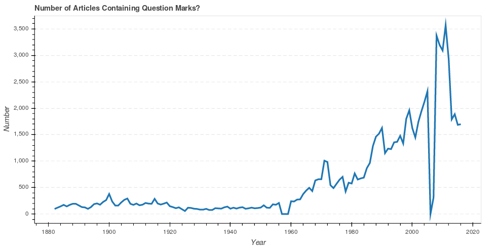
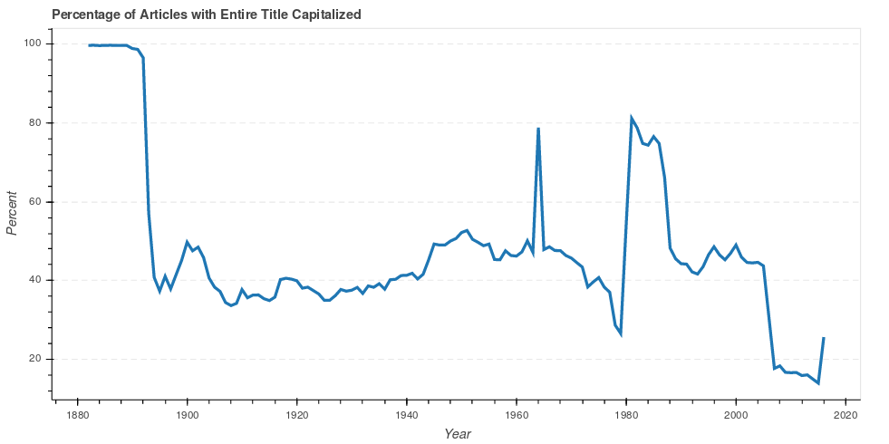
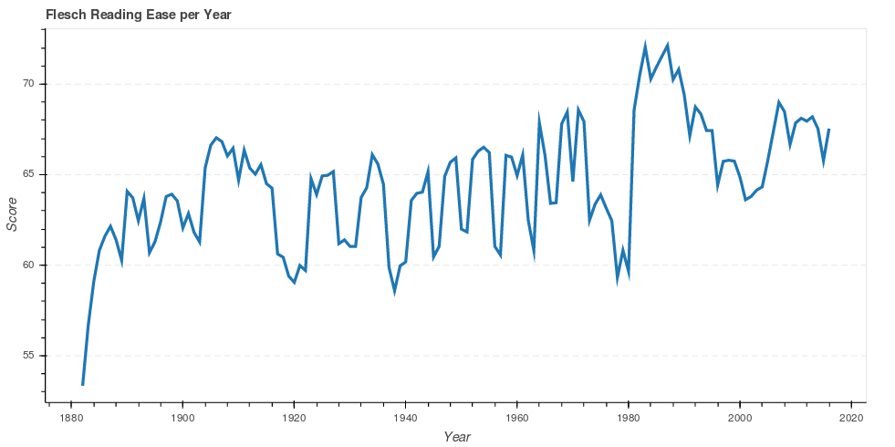
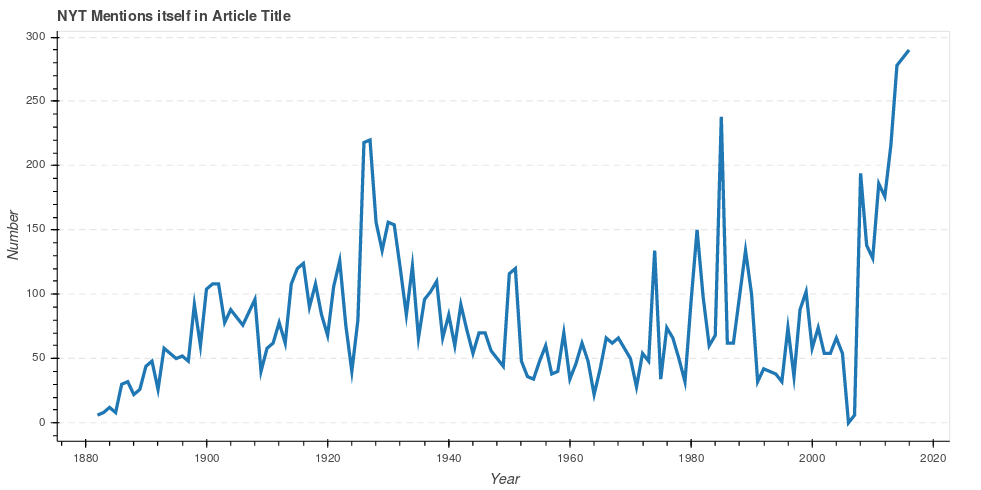

Introduction
Overview and Motivation:
Every day we're greeted with new stories in the news, but how have the headlines themselves changed over time? We set out to uncover trends in the way that headlines are written to better understand the effects of war, technology and (....) on our news. We wanted to find interesting trends in the headlines over the time, and see what factors might be responsible for the variations.
Related Work
The idea of finding trends in headlines was our real inspirtation. We found no such analysis done before, on a large dataset containing close to 13 million articles.This inspired us to use our knowledge from the class and apply it to find some interesting facts about headlines over time.
Initial Questions:
Some of the initial questions that we asked are: Are the headlines become harder or easier to read? In what time period do the headlines have the most question marks? In what time period are the headlines changing from all Caps to lowercase ? Are the people in the 2nd industrial revolution readability score becoming higher or is there any relation?
Exploratory Data Analysis
We used various visualizations to represent our findings. Some include line graphs, scatter plots, and color map feature. These plots were useful to visualize the answers to our questions. We used New York Times API to collect headlines from news articles. We collected around 13 million articles, ranging from the year 1882-2016, to show our analysis of headlines in the news articles over the time period. Since our analysis has been conducted on a large dataset, we kept our visuals simple, so it is easier for someone to understand the analysis.
Final Analysis!
The '?' Analysis:
Clickbait headlines are slowly becoming norm for headlines. They are used to get clicks with nothing more than just a creative way of spinning what could be a mundane topic. The ‘?’ at the end of the headlines prompt the user to click them, and find out the content. We were interested in finding how the use of ‘?’ has changed in the headlines over the time.

As you can see in the graph above, the occurrence of ‘?’ in the headlines has drastically increased. From 1882-1960, the use of ‘?’ in headlines is pretty linear, but it slowly starts picking up after 1960. One interesting thing we noticed, that there was a sheer drop in the use of ‘?’ in the headlines from 2005-2006, but after the year 2007, the use of ‘?’ in the headlines saw an exponential growth.
Percent All CAPS
This graph showed something interesting, It demonstrated that in the 1990s through 2000 the usage of caps started declining.There was a huge peak in 1990 but then is started declining once it hit 2000. It seemed that the usage of caps became less important in the early 2000 . Then it increased again and decline as the years went by.
Flesch Reading Ease Per Year:
 The flesh reading ease is a function in the textstat library in python. It analyses the level of education that a person would need in order to read or understand what it is saying. If you look at the graph it peak’s in 1900 with high 70 score. That means that an 8th and 9th grader would be able to read the headlines on average.New York Times Mentions Itself!!
After analyzing the news headlines for the questions above, we noticed that New York Times kept used the name of the headlines in many articles. From the Graph below it is quite evident that NYT has been mentioning itself quite often in articles. It can be noticed that New York times have mentioned themselves comparatively more in 2016 than any other years on the timeline. Even though that there has been a few ups and downs over the time, but a drastic increase can be noticed after 2007.

Conclusion:
The most drastic conclusion is that headlines are now significantly more likely to include a question! Perhaps this means that writers are trying harder to get a possible readers attention. This is not an unlikely possibility, as competition for readers during the digital-era is very high.
The last interesting result of our analysis is the ALL-CAPS usage for headlines in the 1880's! The team first noticed the presence of all-caps headlines while exploring the data. It is interesting to see the trend away from using all-capital headlines in the late 1800's and their resurgence in the 1980's. Perhaps the 1800's trend was derived from a lack of printing technology; as a way to create a greater variance between the article text and headline text on a page.
We conclude that the structure of headlines has changed drastically over the time period. Our study focuses on the textual behavior of these headlines, and from the results shown above it is quite evident, that the newspaper headlines have shown changes over time.